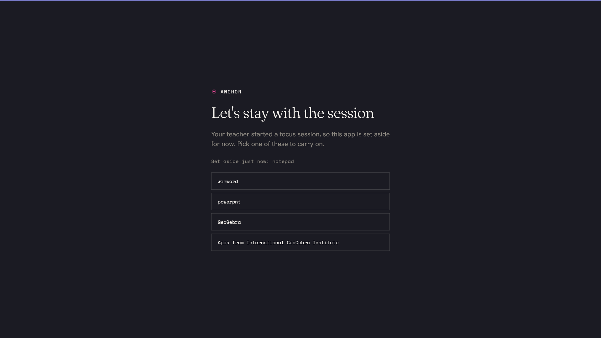

01
A teacher starts a session
A teacher opens Anchor and starts a focus session for the class, choosing the allowlist of apps and websites that lesson needs.
Anchor lets a teacher start a focus session for a class. For its duration each student's device softly keeps to a teacher-defined allowlist. The teacher isn't shown what students do: the dashboard speaks up only when something needs them, such as a student leaving the session or asking for a site. Made by teachers, free and open source for everyone.
What Anchor is
01
A teacher opens Anchor and starts a focus session for the class, choosing the allowlist of apps and websites that lesson needs.
02
For the session's duration, each signed-in student's device softly enforces that allowlist: anything off-list is calmly set aside, and a student can ask for a site they need.
03
The dashboard tells the teacher who joined, declined or left, which site a student asks for, and when someone steps around Anchor. It doesn't show which apps a student used or which blocked pages they tried to open.
Soft enforcement
The agent and the Edge extension decide on the device, from the allowlist, what may open. Those decisions aren't reported to the teacher. During a session the teacher sees who joined, declined or left the session or quit the agent; the sites students ask to open; and tamper signals, such as an InPrivate window left open or the extension switched off (the privacy policy lists every kind), as well as laptops that lose their connection. The teacher does not see which apps a student used or which blocked pages a student tried to open.
Anchor doesn't pretend to be tamper-proof. A determined student can step around it, and that is by design: Anchor is not an arms race against teenagers. When a student does, what the teacher gets is the tamper signal, not a log of what the student did.
Anchor acts only while a teacher has a session running; nothing is recorded between sessions. What is sent goes to the school's own backend; the privacy policy says what it is and how long it is kept.
The builds in the current pilot report more than this. The privacy policy lists what.
How it works
A teacher starts a session from the dashboard. The backend pushes it to every signed-in student device over a realtime channel, and each device enforces the allowlist on its own; only what needs the teacher comes back to the dashboard. Five small components do the work:
A native Windows tray app on each student laptop. It joins the session, gently pulls focus back from off-list apps, and shows the block overlay.
Filters URLs inside Edge against the session allowlist and shows a friendly block page for off-list pages.
A native-messaging bridge between the agent and the extension: the extension gets the session from the agent through it, and if the extension is switched off mid-session, or never connects, the agent reports it.
The teacher's web instrument: start and stop sessions, manage classes and allowlists, see who is in the session, and answer access requests.
Each school self-hosts its own backend. It relays sessions to devices and stores the school's users, schools and lesson periods, classes, allowlists, and sessions with their events — plus, only if the school switches log uploads on, the agents' diagnostic logs.


Free & open source
Anchor is GPL-3.0 licensed and self-hosted: each school runs its own backend. The full source — including exactly what each component collects — is public and auditable.